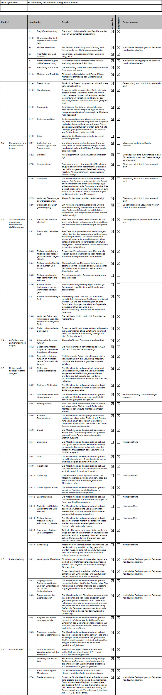

Der Auftragnehmer (AN) liefert eine unvollständige Maschine:
Der Grund für die Unvollständigkeit der Maschine ist die Beistellung der Leittechnik und Schaltanlage für die Schutzeinrichtungen, Anlieferung Motoren und die Ausführung des zugehörigen Stahlbaus durch den Arbeitgeber (AG).
Der AN einer unvollständigen Maschine ist nach 9. ProdSV (Neunte Verordnung zum Produktsicherheitsgesetz) für die Bereitstellung von unvollständigen Maschinen auf dem Markt gesetzlich verpflichtet, entsprechenden Prüfungs-, Dokumentations- und Informationspflichten nachzukommen. Dazu hat der AN nach § 6 Absatz 1 der 9. ProdSV insbesondere vor Inverkehrbringen sicherzustellen, dass
Wichtig ist, dass sich AN und AG darüber einigen, welche der Anforderungen des Anhangs I der Maschinenrichtlinie jeweils eingehalten werden sollen. Hierzu kann eine erweiterte Einbauerklärung für unvollständige Maschinen dienen.
Im Folgenden ist der Abschnitt einer solchen erweiterten Einbauerklärung beispielhaft dargestellt, der die Anwendung und Einhaltung der Sicherheits- und Gesundheitsschutzanforderungen beschreibt. Diese trifft so, wie sie ausgefüllt und abgedruckt ist, nur auf das dargestellte Beispiel zu. Darin als "anwendbar" und "eingehalten" gekennzeichnete Punkte müssen in anderen Fällen nicht zutreffen.
Beispiel für den Abschnitt einer erweiterten Einbauerklärung4 zu den grundsätzlichen Sicherheits- und Gesundheitsanforderungen gemäß MRL 2006/42/EG Anhang I, die zur Anwendung kommen und eingehalten bzw. eingeschränkt eingehalten werden.
Diese Angaben ergänzen den Eintrag gemäß Anhang II B. 4. der Maschinenrichtlinie 2006/42/EG in der Einbauerklärung für unvollständige Maschinen. Die Angaben sind erforderlich, um das Konformitätsbewertungsverfahren für die Ausrüstung bzw. Maschine durchführen zu können, in die die unvollständige Maschine eingebaut wird.

| 4 | Diese erweiterte Einbauerklärung trifft, so wie sie ausgefüllt und abgedruckt ist, nur auf dieses Beispiel zu. Darin als "anwendbar" und "eingehalten" gekennzeichnete Punkte müssen in anderen Fällen nicht zutreffen. |